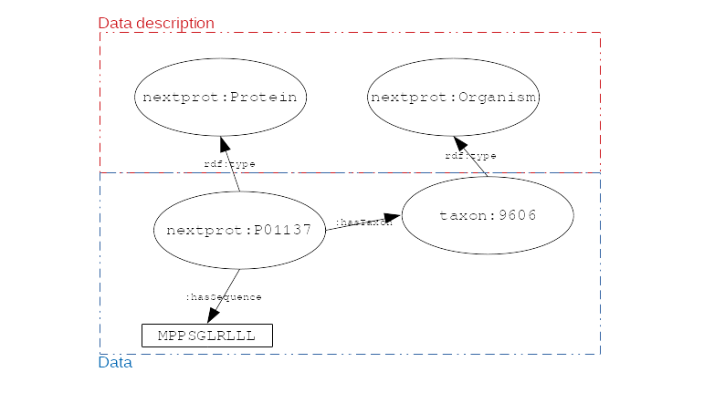
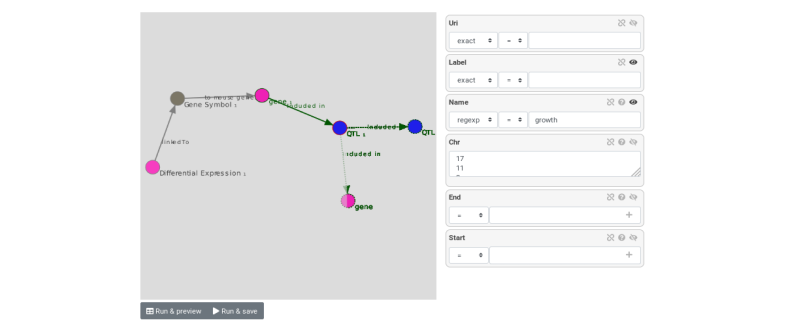

Integrate and query local datasets and distant RDF data with AskOmics using Semantic Web technologies
Contributors
 Xavier Garnier
Xavier Garnier  Anthony Bretaudeau
Anthony Bretaudeau  Anne Siegel
Anne Siegel  Olivier Dameron
Olivier Dameron  Mateo Boudet
Mateo Boudet
Questions
What is the Semantic Web and how can it help integrating and querying data?
How can AskOmics help benefiting from Semantic Web technologies without having to write RDF or SPARQL code?
Objectives
Understand the basics of RDF and SPARQL
Learn how input data must be structured to be integrated with AskOmics
Learn how to connect distant SPARQL endpoints to local data with AskOmics
How to explore data
Requirements
Study of biological mechanisms requires to:
- integrate multiple data sources (differential expression results, genome annotation, remote protein database)
- query them to answer a biological question (which genes are over-expressed in a condition, and what are the proteins coded by these genes)
.image-00[ ]
What is the Semantic Web?
Semantic Web
Set of recommendations to integrate data, to integrate domain knowledge and to perform query and reasoning.
- Resource Description Framework (RDF): annotate data
- RDFS + OWL: represent knowledge (data description)
- SPARQL Protocol and RDF Query Language (SPARQL): query data
RDF
- RDF is for describing resources (the R in RDF)
- resources are identified by URIs (
nextprot:P01137,taxon:9606)
- resources are identified by URIs (
- describing (D in RDF) a resource is representing it explicitly
- its attributes (
nextprot:P01137 :hasSequence "MPPSGLRLLL...") - its relations to other entities (
nextprot:P01137 :hasTaxon taxon:9606) - its descriptions (aka classes) (
nextprot:P01137 :is nextprot:Protein)
- its attributes (
RDF: Set of triples
- RDF is represented by triples (subject, predicate, object)
- Subject: the resource being described
- Predicate: the relation (from subject to object)
- Object: a value of the predicate for the subject
.image-01[ ]
nextprot:P01137 :hasTaxon taxon:9606 .
nextprot:P01137 :hasSequence "MPPSGLRLLL" .
RDF: triples form a labeled directed graph
# Description
nextprot:P01137 rdf:type nextprot:Protein .
taxon:9606 rdf:type nextprot:Organism .
# Data
nextprot:P01137 :hasTaxon taxon:9606 .
nextprot:P01137 :hasSequence "MPPSGLRLLL" .
.image-02[ ]
SPARQL
- The SPARQL language is a set of triple patterns with variables (
?variable_name)
SELECT ?gene
WHERE {
?gene rdf:type :Gene .
?gene :hasTaxon taxon:9606 .
}
- All
?genewithrdf:type:Geneand with:hasTaxontaxon:9606 - In other words, the query returns all the human genes
SPARQL: entity matching allow federated queries
.pull-left[
-
Using the same identifier for the same entity (entity matching) across multiple datasets allows federated queries
-
Federated SPARQL queries provide unified querying capabilities over multiple datasets as if they were a single virtual graph
]
.pull-right[ .image-03[ ] ]
What is AskOmics?
AskOmics
Web software for data integration and query using Semantic Web. The main functionalities are:
- Convert of multiple data formats into RDF triples and store them in a local triplestore
- Generate complex SPARQL queries using a user-friendly interface
- Support external SPARQL endpoint to cross-reference integrated data with remote data
AskOmics can be used as a standalone software, or with Galaxy
Data integration with AskOmics
Local data integration
-
RDF and SPARQL are good infrastructures to describe and query biological datasets, but most of them are still stored on flat files like CSV/TSV and GFF.
-
AskOmics converts multiple structured data formats into RDF triples
- CSV/TSV
- GFF
- BED
AskOmics generates the graph of data and the abstraction
AskOmics uses the file structure (e.g. header of TSV files) to generate the graph of data description: the abstraction
.image-04[ ]
The rest of the files is converted to RDF triples that correspond to the data.
Distant RDF data integration
-
Some public databases (e.g. neXtProt) provide RDF data through a SPARQL endpoint (public access for RDF data)
- To connect with a remote SPARQL endpoint, AskOmics needs its RDF abstraction
- The abstraction can be generated with abstractor
pip3 install abstractor
abstractor -s https://sparql.nextprot.org/sparql -o nextprot_abstraction.ttl -f turtle
- This abstraction can then be uploaded into AskOmics as a standard file
Query multiple data sources with AskOmics
Query composition
- Users navigate through the abstraction of local and remote data and create a path that represents a query
.image-06[ ]
- The query is converted to SPARQL code that is executed on the local and remote RDF data
- Results are returned and can be downloaded
Key Points
- RDF and SPARQL are Semantic Web technologies that come useful for data integration and querying but the technical aspects may deter end-users
- AskOmics is a web platform for data integration and query using Semantic Web in a user-friendly way
Thank you!
This material is the result of a collaborative work. Thanks to the Galaxy Training Network and all the contributors! This material is licensed under the Creative Commons Attribution 4.0 International License.
This material is licensed under the Creative Commons Attribution 4.0 International License.